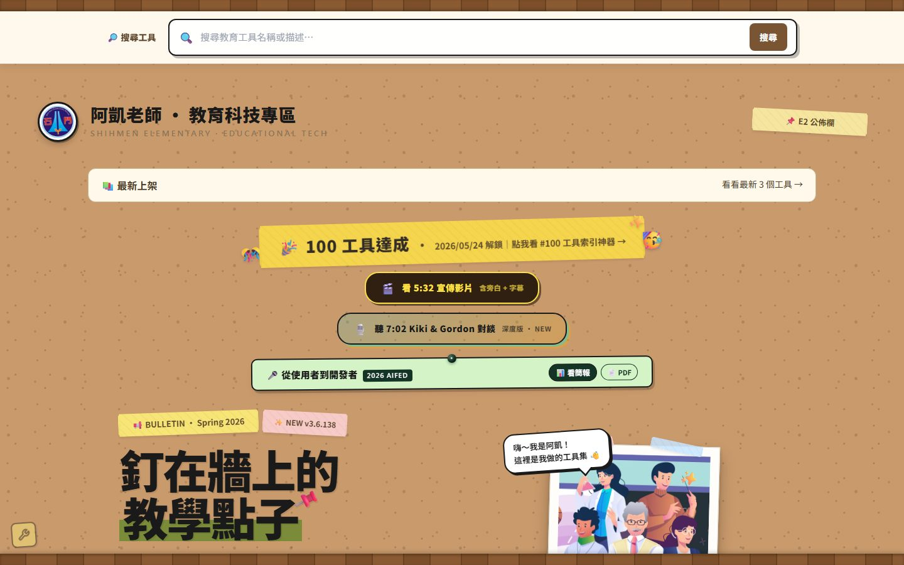
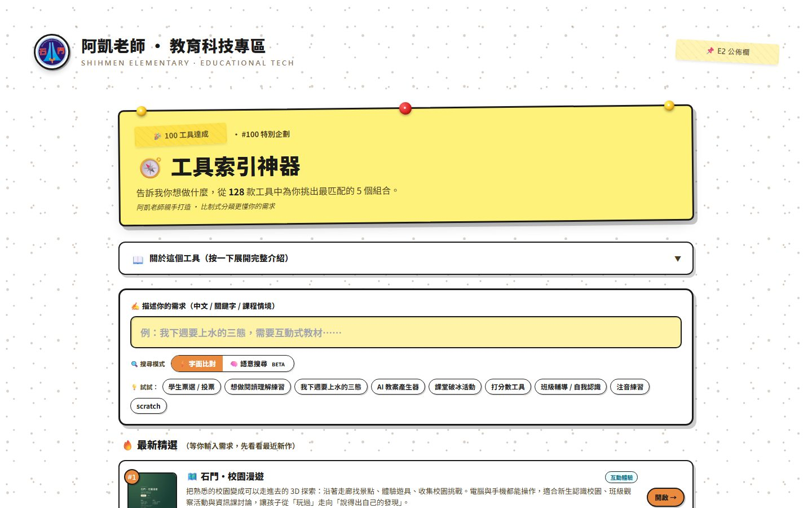
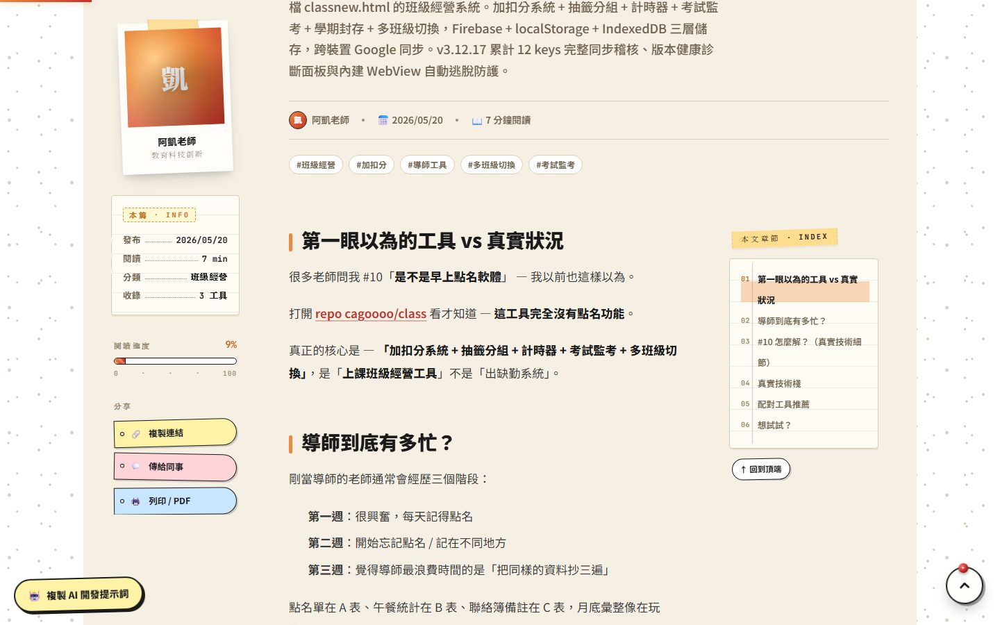

公共程式平臺上架內容報告
報告人 黃凱揚 資訊組長（阿凱老師）
桃園市龍潭區石門國民小學
2026.11.06（五）・數位發展部
| Fortify 中風險以上 | 0 |
| Mend 中風險以上 | 0 |
| 開源授權 | MIT |
| 平臺上架標準 | ✓ 通過 |
→ 目標：免安裝、免註冊、照學校需求量身打造，老師打開就能用。
用口語描述
老師遇到的問題
AI Agent 寫程式
我負責審核與決策
每次修改都
跑過檢查
推上 GitHub
幾分鐘就更新
老師用了再提
下一輪修改

依老師或學生身分推薦工具
OPEN ↗ 2輸入「我要上 Scratch 程式設計」
OPEN ↗ 3加扣分、抽籤、聯絡簿一次搞定
OPEN ↗ 4熱力圖統計、AI 撰寫學期報告
OPEN ↗
斜線＝不滿一個月（1/15 起記錄，10 月統計至 10/30）。資料來源：網站即時統計，2026.10.30 擷取。
學生名單、加扣分、抽籤分組、計時器、聯絡簿、作業檢查、監考，八大功能；多班級資料自動分開。
三、五、六年級整學期的互動教學艙：從電腦入門、Scratch、micro:bit 到 AI 創作與媒體識讀。
禮堂、專科教室、平板車線上預約；熱力圖看使用情形，AI 自動撰寫學期使用報告。
平臺寄來提交表與上架 SOP
自行檢測：Semgrep、npm audit、機密掃描、防毒，皆 0 項
237 筆，其中中風險以上 40 筆
逐筆修補，中風險以上降到 0
檢查第三方套件弱點與授權
Fortify、Mend 中風險以上皆 0
→ 平臺標準：不得有中風險（含）以上弱點。每次收到報告，原則上當天修完、當天回覆。
| 日期 | 掃描 | 總筆數 | 中風險以上 |
|---|---|---|---|
| 10/08 | Fortify 初掃 | 237 | 40 |
| 10/13 | 第 1 次複掃 | 218 | 34 |
| 10/14 | 第 2 次複掃 | 196 | 6 |
| 10/15 | 第 3 次複掃 | 193 | 1 |
| 10/15 | 第 4 次複掃 | 192 | 0 |
| 10/28 | 第 5 次複掃 | 189 | 0 |
剩下 189 筆皆為低風險，多數是建置腳本讀檔、開發用伺服器記錄等，不在正式網站執行。
→ 心得：資安不是額外的工作，是讓其他學校敢拿去用的前提。
訪客畫面發生
程式錯誤
Sentry 追蹤
＋雲端錯誤日誌
去雜訊、分三級
同一錯誤限流
卡片即時通知
手機馬上看到
AI 協助診斷
不直接改程式
每款工具一頁：名稱、分類、作者與學校，附結構化資料（SoftwareApplication）。
回答「老師怎麼用、適合什麼情境」，附結構化資料（BlogPosting），連回相關工具。
老師真正開啟、帶學生使用的網頁。
Akai/ ├─ client/ # 前端網站 ├─ functions/ # 後端雲端函式 ├─ firestore.rules # 資料庫安全規則 ├─ .github/workflows/ # 自動測試與部署 ├─ docs/security/ # 檢測與修補紀錄 └─ LICENSE # MIT 授權
在 GitHub 上一鍵 Fork
建立自己的 Firebase 專案、改校名與工具清單
GitHub Pages 免費代管，不用架伺服器
「複製 AI 開發提示詞」，每篇文章各有一份
ChatGPT、Claude、Gemini 都可以
身分、想解決的問題、環境限制
先提方案，每步都由老師確認
提示詞已附原始碼連結、金鑰不進程式碼、學生個資提醒、沿用須標註來源。

← 一鍵複製Fortify、Mend 這類商用工具，學校自己很難負擔。建議把「平臺協助檢測」做成學校送件的固定服務。
學校多半沒有資安人力。若有給學校的檢測流程、報告範本與常見問答，會有更多老師的作品願意上架。
「近似比對」把常見檔案判成別人的專案、說明文字被當成密碼，查證很花時間。有判讀說明，雙方都省事。
讓教育類公共程式容易被其他學校找到、沿用，真正做到「一校開發，各校受惠」。
桃園市龍潭區石門國民小學 教務處資訊組｜黃凱揚 資訊組長｜謝謝聆聽，敬請指教